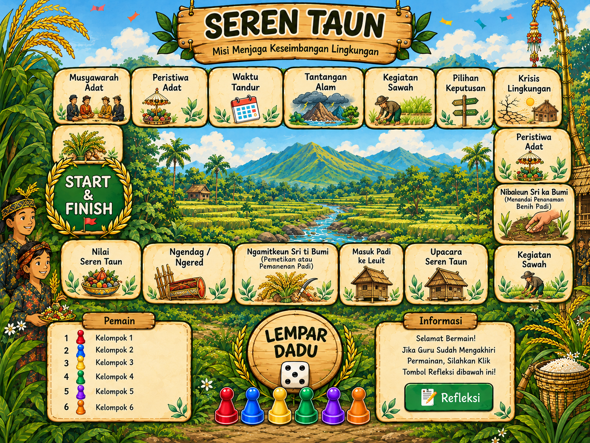
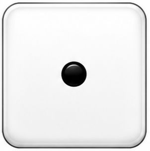
0
1 / 1
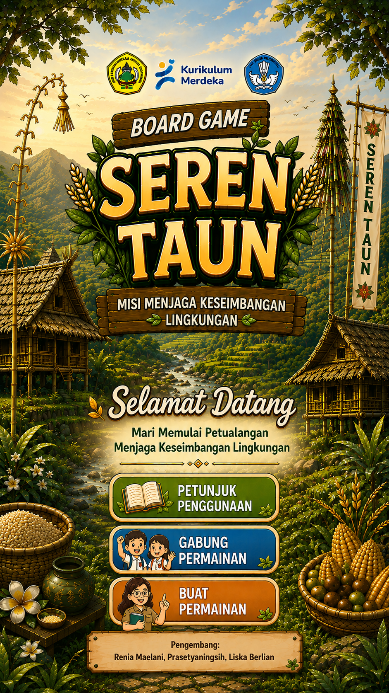
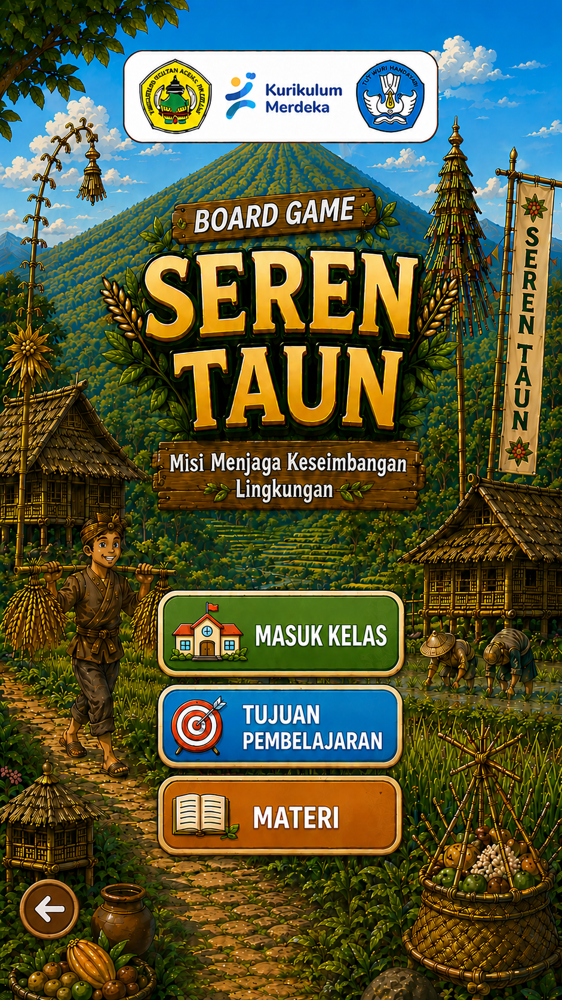
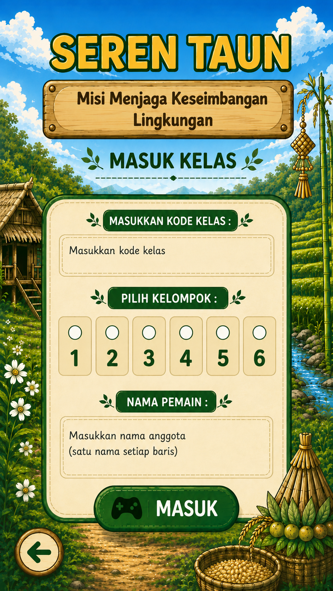


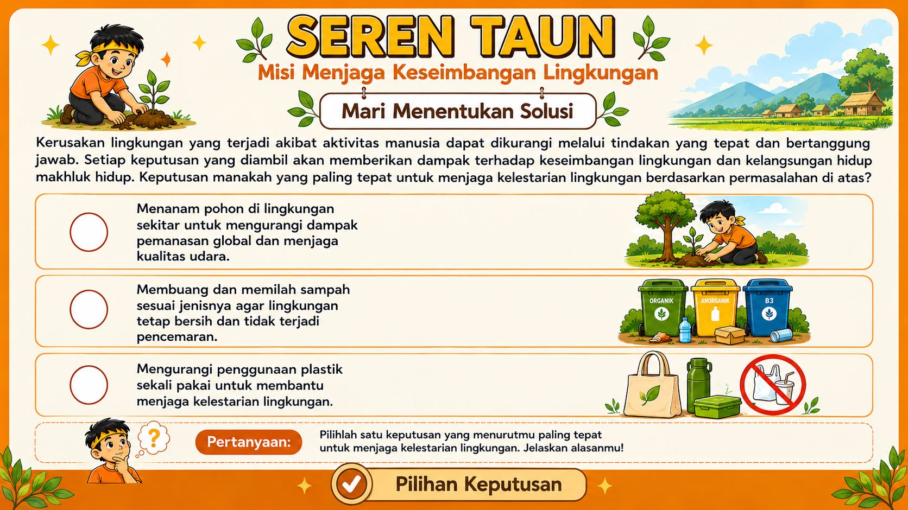
Seren Taun merupakan tradisi masyarakat Sunda sebagai ungkapan rasa syukur atas hasil panen padi dan harapan agar hasil pertanian ke depannya tetap baik.
Yuk, kenali tradisi Seren Taun lebih dekat! 🌾
Ceritakan pengalamanmu setelah bermain Seren Taun, ya! 🌾
Ceritakan pengalamanmu setelah bermain Seren Taun, ya! 🌾

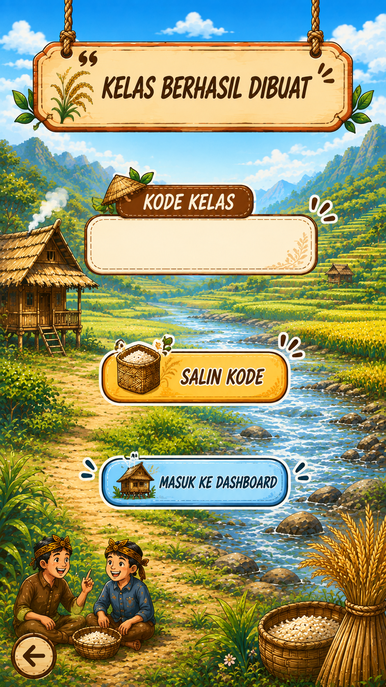
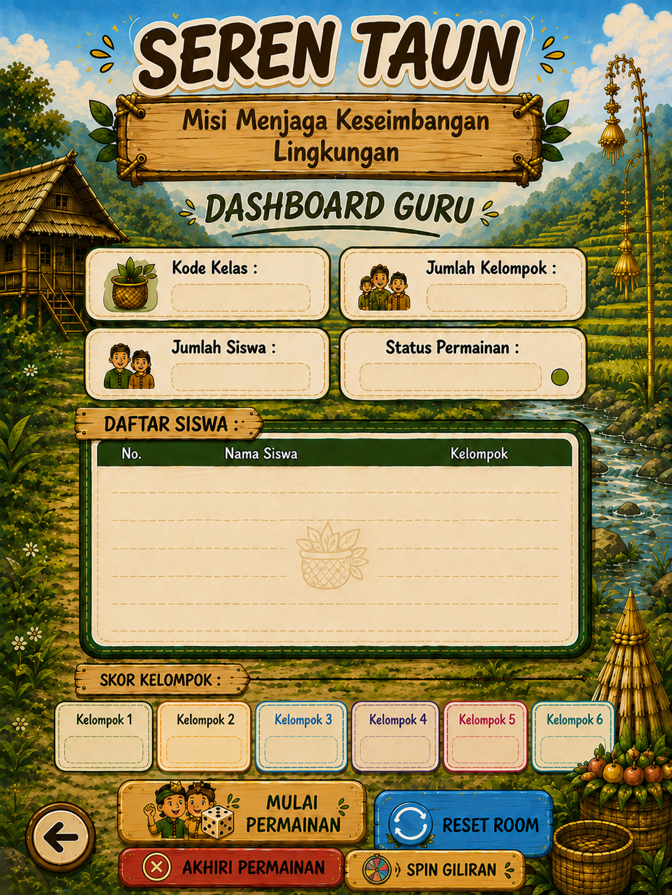
Refleksi siswa setelah bermain game Seren Taun 🌾
Klik tombol untuk memuat hasil refleksi.
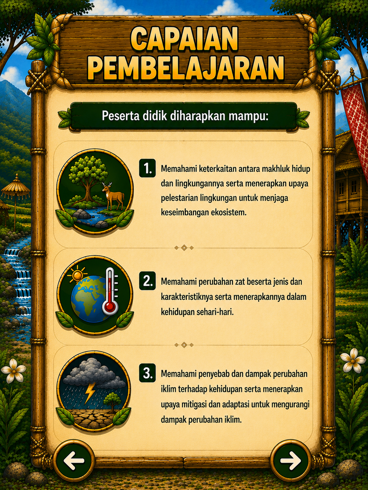
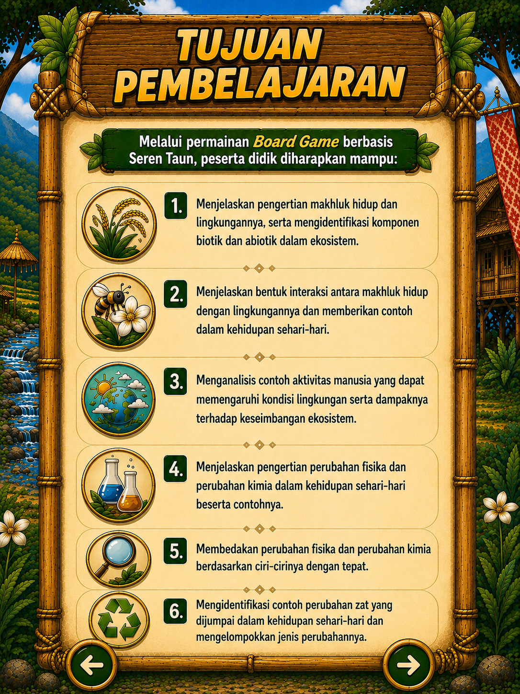
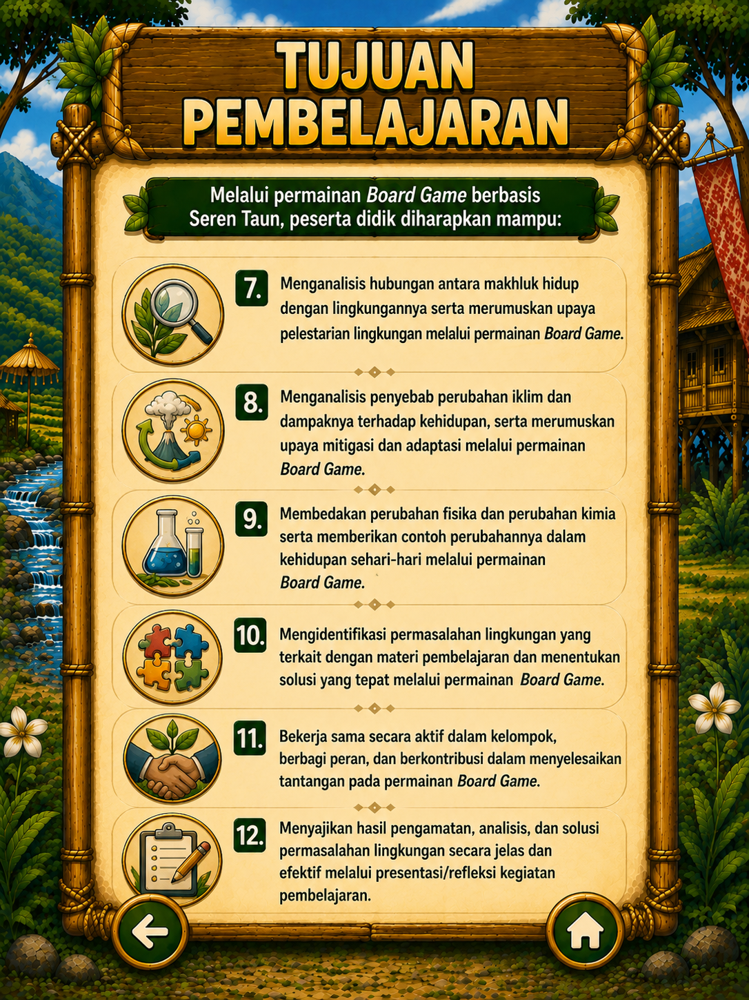
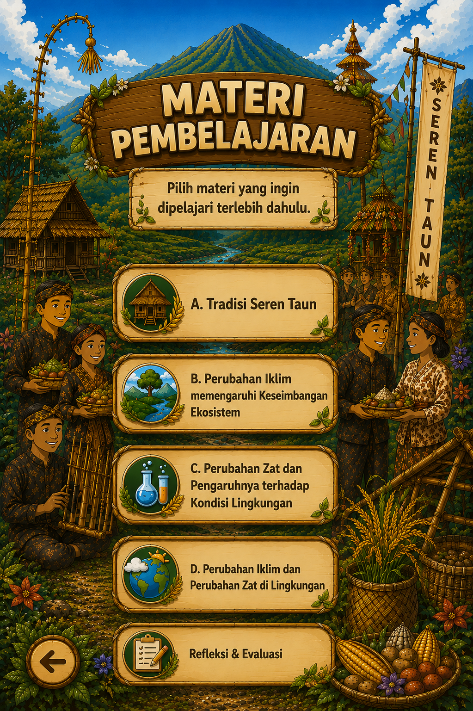
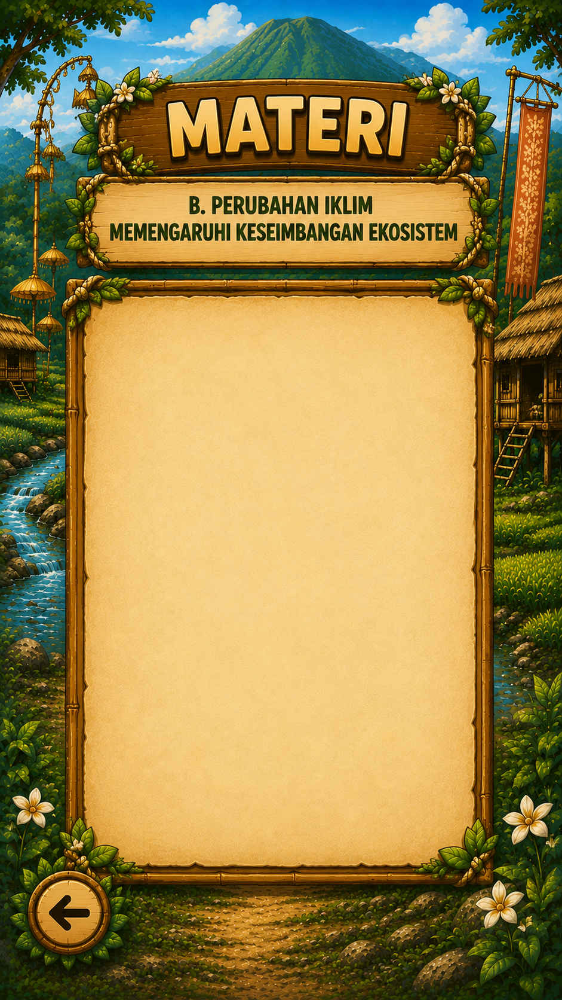
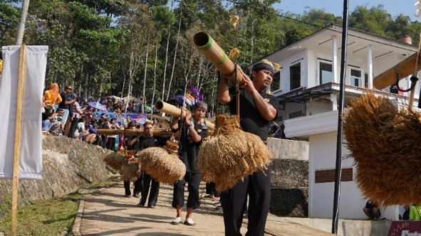
Upacara Seren Taun, masyarakat bekerja sama dan bergotong royong untuk menyelenggarakan upacara tersebut. Hal ini menunjukkan kuatnya nilai kebersamaan dan persatuan dalam kehidupan masyarakat adat. Tradisi Seren Taun juga mengajarkan bahwa manusia tidak dapat hidup tanpa alam. Tanah yang subur, ketersediaan air, udara yang bersih, serta kondisi iklim yang baik sangat memengaruhi keberhasilan panen. Jika lingkungan mengalami kerusakan, maka hasil pertanian juga dapat terganggu.
Masyarakat adat di berbagai wilayah memiliki kesadaran kolektif untuk menjaga kelestarian alam dan memanfaatkan sumber daya secara bijaksana sebagai bagian dari kearifan lokal yang diwariskan secara turun-temurun. Nilai-nilai tersebut tidak hanya berfungsi sebagai pedoman dalam kehidupan sehari-hari, tetapi juga menjadi bentuk pengetahuan ekologis lokal yang relevan dalam upaya menjaga keseimbangan lingkungan. Kearifan lokal Seren Taun mencerminkan adanya hubungan harmonis antara manusia, alam, dan budaya yang terus dipertahankan dari generasi ke generasi. Nilai-nilai tersebut menjadi landasan penting dalam mengintegrasikan kearifan lokal ke dalam pembelajaran IPA guna meningkatkan pemahaman dan kepedulian peserta didik terhadap lingkungan.
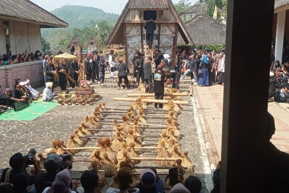
Melalui Seren Taun, peserta didik dapat memahami bahwa tradisi budaya tidak hanya berkaitan dengan adat istiadat, tetapi juga mencerminkan hubungan antara manusia dan lingkungan. Dalam Tradisi Seren Taun ini terdapat berbagai aktivitas yang berkaitan dengan konsep IPA, seperti menjaga keseimbangan ekosistem dan pelestarian lingkungan yang termasuk dalam materi interaksi makhluk hidup, penggunaan sumber daya alam yang bijak serta pemanfaatan bahan-bahan alami yang berkaitan dengan jenis dan sifat zat, hingga keterkaitan musim tanam dan kondisi cuaca yang berhubungan dengan perubahan iklim dan dampaknya terhadap kehidupan. Tradisi Seren Taun dapat dijadikan sebagai konteks pembelajaran IPA terpadu yang relevan dengan kehidupan sehari-hari peserta didik sekaligus membantu menanamkan nilai kepedulian terhadap lingkungan.
Pernahkah kamu merasakan cuaca yang semakin tidak menentu? Yuk, simak dua video berikut untuk mengetahui bagaimana perubahan iklim dapat memengaruhi keseimbangan ekosistem di sekitar kita.
Keseimbangan ekosistem merupakan kondisi ketika komponen biotik dan abiotik dalam suatu lingkungan berada dalam keadaan yang relatif stabil sehingga proses ekologis seperti aliran energi dan siklus materi dapat berlangsung secara berkelanjutan. Keseimbangan memungkinkan ekosistem mempertahankan kelangsungan hidup berbagai jenis makhluk hidup serta menjaga kestabilan lingkungan dalam jangka panjang (Haya et al., 2025). Menurut Begon, Townsend, dan Harper dalam buku Ecology: From Individuals to Ecosystems, keseimbangan ekosistem sangat dipengaruhi oleh interaksi antarorganisme serta hubungan antara organisme dengan lingkungannya (Begon, Townsend & Harper, 2006). Komponen biotik seperti tumbuhan, hewan, dan mikroorganisme berinteraksi dengan komponen abiotik seperti tanah, air, udara, cahaya matahari, dan suhu sehingga membentuk suatu sistem ekologis yang dinamis. Hubungan antara komponen biotik dan abiotik menjadi faktor penting dalam menjaga keseimbangan suatu ekosistem (Enquist et al., 2015).
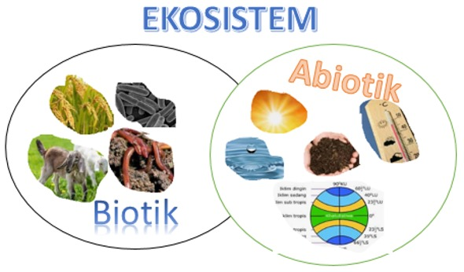
Hubungan antara komponen biotik dan abiotik dapat ditemukan dalam praktik pertanian tradisional yang berkaitan dengan Tradisi Seren Taun. Dalam proses penanaman padi, masyarakat memanfaatkan unsur-unsur abiotik seperti tanah, air, cahaya matahari, udara dan kondisi cuaca untuk mendukung pertumbuhan tanaman padi sebagai komponen biotik utama dalam ekosistem sawah. Selain tanaman padi, terdapat juga organisme lain seperti serangga, burung, cacing, dan mikroorganisme tanah yang berperan dalam menjaga keseimbangan ekosistem pertanian. Hubungan antara komponen biotik dan abiotik tersebut menunjukkan bahwa keberhasilan pertanian tradisional sangat dipengaruhi oleh kondisi lingkungan yang seimbang. Melalui praktik pertanian yang diwariskan secara turun-temurun dalam Tradisi Seren Taun, masyarakat menunjukkan adanya upaya menjaga keselarasan antara manusia dan alam agar berkelanjutan lingkungan tetap terpelihara (Triana & Andi, 2023).
Hubungan antarorganisme dalam suatu ekosistem membentuk jaringan interaksi seperti rantai makanan dan jaring-jaring makanan. Interaksi tersebut memungkinkan terjadinya aliran energi dari produsen menuju konsumen hingga pengurai. Aliran energi tersebut menunjukkan adanya ketergantungan antarorganisme dalam memperoleh sumber energi untuk mempertahankan kelangsungan hidupnya. Dalam jaring-jaring makanan, satu organisme dapat memiliki lebih dari satu hubungan dengan organisme lainnya sehingga membentuk pola interaksi yang lebih kompleks. Keberadaan hubungan yang beragam tersebut membantu menjaga kestabilan ekosistem karena organisme memiliki alternatif sumber makanan ketika terjadi perubahan pada populasi tertentu. Pada struktur interaksi yang terbentuk dalam jaring-jaring makanan menunjukkan bahwa organisme dalam ekosistem saling berhubungan satu sama lain dalam suatu sistem kehidupan yang dinamis (Kwak & Park 2020).
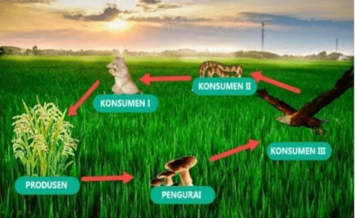
Dalam ekosistem sawah, tanaman padi berperan sebagai produsen yang menjadi sumber makanan bagi berbagai organisme lain seperti serangga, burung, dan hewan kecil lainnya. Organisme-organisme tersebut kemudian membentuk rantai makanan dan jaring-jaring makanan yang menunjukkan adanya hubungan saling ketergantungan antara makhluk hidup. Keberadaan mikroorganisme tanah juga berperan sebagai pengurai yang membantu mengembalikan unsur hara ke dalam tanah sehingga kesuburan lahan pertanian tetap terjaga. Interaksi antarorganisme tersebut menunjukkan bahwa sistem pertanian tradisional yang berkaitan dengan Tradisi Seren Taun tidak hanya berfungsi sebagai pemenuhan kebutuhan pangan, tetapi juga mencerminkan adanya hubungan saling ketergantungan antara makhluk hidup dan lingkungannya dalam menjaga keseimbangan ekosistem sawah (Apriyana et al., 2025).
Stabilitas ekosistem juga dipengaruhi oleh kompleksitas interaksi yang terjadi di dalamnya. Ekosistem dengan struktur interaksi yang lebih kompleks cenderung memiliki kemampuan yang lebih baik dalam mempertahankan keseimbangannya. Hal ini terjadi karena organisme dalam ekosistem memiliki lebih dari satu hubungan dalam jaring-jaring makanan sehingga terdapat berbagai jalur aliran energi yang saling terhubung. Kondisi tersebut membuat ekosistem lebih mampu menyesuaikan diri ketika terjadi perubahan pada salah satu populasi organisme. Gangguan terhadap ekosistem dapat berupa perubahan kondisi lingkungan, kerusakan habitat, maupun aktivitas manusia yang berlebihan seperti eksploitasi sumber daya alam. Gangguan tersebut dapat memengaruhi struktur komunitas dan fungsi ekosistem secara keseluruhan sehingga berdampak pada keseimbangan lingkungan (Cui, Marsland & Mehta, 2024).
Keseimbangan ekosistem juga dapat ditemukan dalam sistem pertanian tradisional yang berkaitan dengan Tradisi Seren Taun. Masyarakat adat berupaya menjaga keseimbangan lingkungan melalui pengelolaan lahan pertanian secara bijak, menjaga kesuburan tanah, serta memanfaatkan sumber daya alam sesuai kebutuhan agar ekosistem sawah tetap stabil. Praktik tersebut menunjukkan adanya kesadaran masyarakat dalam mengurangi kerusakan lingkungan akibat aktivitas manusia yang berlebihan. Nilai-nilai kearifan lokal yang terdapat dalam Tradisi Seren Taun mencerminkan upaya masyarakat dalam menjaga hubungan harmonis antara manusia dan alam sehingga keberlanjutan lingkungan dapat tetap terpelihara (Amalia & Haryana, 2023).
Interaksi antarspesies seperti predasi, kompetisi, dan simbiosis berperan dalam mengatur jumlah populasi serta menjaga kestabilan komunitas biologis dalam suatu ekosistem (Rutherford, 2018). Hubungan antarorganisme juga membentuk jaringan interaksi ekologis yang kompleks seperti rantai makanan dan jaring-jaring makanan. Jaringan hubungan tersebut memungkinkan terjadinya aliran energi dari produsen menuju konsumen hingga dekomposer sehingga fungsi ekosistem dapat berlangsung secara berkelanjutan (Heffelfinger et al., 2020). Interaksi antarorganisme juga memengaruhi proses ekologis yang lebih luas seperti siklus materi dan dinamika komunitas sehingga setiap organisme memiliki peran menjaga keseimbangan lingkungan.
Konsep hubungan antara makhluk hidup dan lingkungan tidak hanya dipahami melalui konsep ilmiah, tetapi juga tercermin dalam kehidupan masyarakat Sunda melalui berbagai praktik budaya dan tradisi lokal yang diwariskan secara turun-temurun. Salah satu tradisi yang mencerminkan hubungan tersebut adalah Seren Taun yang dilaksanakan sebagai ungkapan rasa syukur atas hasil panen padi sekaligus bentuk penghormatan masyarakat terhadap alam yang telah memberikan kehidupan (Amalia & Haryana, 2023). Tradisi Seren Taun ini menunjukkan adanya kesadaran masyarakat untuk menjaga keseimbangan antara manusia dan lingkungan demi keberlanjutan kehidupan. Nilai-nilai yang terkandung dalam Tradisi Seren Taun mencerminkan kearifan lokal masyarakat Sunda dalam membangun hubungan yang harmonis antara manusia dan alam (Triana, 2023).
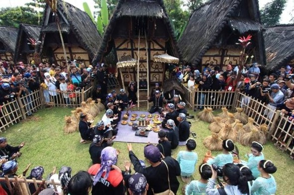
Pelaksanaan Tradisi Seren Taun berkaitan erat dengan praktik pertanian tradisional masyarakat Sunda. Dalam Tradisi Seren Taun ini, masyarakat membawa hasil panen padi untuk disimpan di lumbung padi atau leuit sebagai simbol keberlanjutan kehidupan dan ketahanan pangan masyarakat adat. Padi dipandang sebagai sumber kehidupan yang harus dihormati sehingga masyarakat menerapkan berbagai aturan dalam pengelolaan pertanian, seperti menjaga kesuburan tanah dan memanfaatkan sumber daya alam secara bijak. Praktik tersebut menunjukkan adanya nilai kearifan lokal dalam pengelolaan sumber daya alam yang diwariskan secara turun-temurun (Iskandar & Iskandar, 2016).
Tradisi Seren Taun juga mencerminkan pengetahuan lokal masyarakat dalam menjaga keseimbangan lingkungan melalui sistem pertanian tradisional. Dalam sistem tersebut, dimana tanaman padi berperan sebagai produsen yang menjadi sumber energi bagi organisme lain seperti serangga, burung, dan mikroorganisme tanah sehingga membentuk hubungan ekologis dalam ekosistem sawah (Iskandar & Iskandar, 2018). Interaksi tersebut menunjukkan bahwa praktik pertanian tradisional tidak hanya bertujuan menghasilkan pangan, tetapi juga menjaga keberlanjutan lingkungan. Kondisi tersebut mencerminkan adanya nilai kearifan lokal masyarakat dalam pengelolaan lingkungan secara berkelanjutan (Apriyana et al., 2025).

Perubahan zat merupakan proses ketika suatu zat mengalami perubahan sifat, bentuk, maupun susunannya. Dalam kehidupan sehari-hari, perubahan zat dapat terjadi secara alami maupun akibat aktivitas manusia sehingga memberikan dampak terhadap lingkungan sekitar. Secara umum, perubahan zat dibedakan menjadi perubahan fisika yang tidak menghasilkan zat baru dan perubahan kimia yang menghasilkan zat baru dengan sifat berbeda dari zat semula (Wandini et al., 2022). Perbedaan kedua jenis perubahan tersebut menjadi konsep dasar yang penting dipahami dalam pembelajaran IPA karena berkaitan dengan berbagai fenomena yang terjadi di lingkungan sekitar peserta didik.
Konsep perubahan zat dapat dikaitkan dengan sistem pertanian tradisional masyarakat Sunda yang berkaitan dengan Tradisi Seren Taun, khususnya dalam proses penanaman hingga pengolahan padi. Pada proses pertanian tersebut, padi mengalami berbagai perubahan akibat pengaruh air, cahaya matahari, dan unsur hara selama masa pertumbuhan. Setelah dipanen, terdapat perubahan fisika seperti penjemuran padi yang tidak menghasilkan zat baru serta perubahan pada proses pemasakan beras yang menyebabkan perubahan sifat bahan pangan (Florentina et al., 2016). Kegiatan tersebut menunjukkan bahwa konsep perubahan zat tidak hanya dipelajari secara ilmiah, tetapi juga tercermin dalam praktik pertanian dan budaya masyarakat Sunda.
Perubahan fisika seperti mencair, membeku, menguap, dan mengembun berkaitan dengan perubahan wujud zat yang banyak dijumpai dalam kehidupan sehari-hari. Proses tersebut berperan dalam siklus air yang memengaruhi kelembapan udara, curah hujan, serta ketersediaan air bagi kegiatan pertanian. Dalam masyarakat Sunda, kondisi alam dan ketersediaan air menjadi faktor penting dalam proses penanaman padi yang berkaitan dengan Tradisi Seren Taun. Tradisi Seren Taun dilaksanakan sebagai bentuk rasa syukur atas hasil panen yang diperoleh melalui proses pertanian yang bergantung pada keseimbangan kondisi lingkungan. Melalui pemahaman mengenai perubahan wujud zat dan siklus air, peserta didik dapat memahami keterkaitan antara konsep sains dengan praktik budaya masyarakat di lingkungan sekitar (Ramadhani et al., 2023).
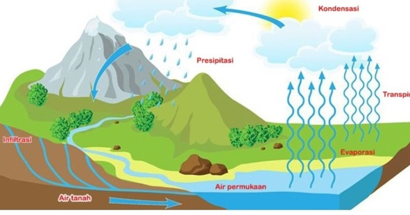
Perubahan kimia juga dapat dikaitkan dengan sistem pertanian tradisional yang mendukung pelaksanaan Tradisi Seren Taun. Dalam kegiatan pertanian, perubahan kimia terjadi pada proses penguraian bahan organik di tanah yang membantu meningkatkan kesuburan tanah bagi pertumbuhan tanaman padi (Sianturi, Fauzi & Damanik, 2018). Selain itu, perubahan kimia juga terjadi pada proses pengolahan hasil panen padi yang menyebabkan perubahan sifat bahan pangan. Kesuburan tanah dan keberhasilan panen menjadi hal penting dalam Tradisi Seren Taun karena padi dipandang sebagai sumber kehidupan masyarakat. Kondisi tersebut menunjukkan bahwa konsep perubahan kimia tidak hanya dipelajari secara ilmiah, tetapi juga berkaitan dengan praktik pertanian dan budaya masyarakat Sunda.
Perubahan zat, baik perubahan fisika maupun perubahan kimia dapat memberikan dampak terhadap kondisi lingkungan. Salah satu dampaknya terlihat pada pencemaran udara akibat proses pembakaran kendaraan, industri, maupun sampah yang menghasilkan berbagai gas pencemaran sehingga menurunkan kualitas lingkungan (Arifin & Rahman, 2024). Kondisi lingkungan yang tercemar dapat memengaruhi kegiatan pertanian yang menjadi sumber kehidupan masyarakat agraris, termasuk masyarakat Sunda dalam pelaksanaan Tradisi Seren Taun. Selain itu, limbah rumah tangga, pertanian, dan industri juga dapat menyebablan perubahan zat di perairan yang memicu eutrofikasi akibat meningkatnya kadar nitrat dan fosfat didalam air (Adawiah et al, 2021). Kondisi tersebut dapat menganggu keseimbangan ekosistem perairan serta memengaruhi kualitas lingkungan sekitarnya.
Yuk, simak video berikut untuk memahami perubahan zat dan dampaknya terhadap lingkungan.
Kandungan nitrat dan fosfat yang tingga juga berpengaruh terhadap kelimpahan fitoplankton yang menjadi indikator kesuburan sekaligus kualitas perairan (Nuryani & Sari, 2023). Selain itu, aktivitas manusia di sekitar perairan dapat meningkatkan kandungan nutrien seperti nitrogen dan fosfor yang memengaruhi status trofik perairan serta memicu terjadinya eutrofikasi (Aryani et al., 2021). Kondisi eutrofikasi dapat menyebabkan pertumbuhan alga secara berlebihan sehingga mengurangi kadar oksigen terlarut di dalam air. Penurunan kadar oksigen tersebut dapat menganggu kehidupan organisme perairan dan merusak keseimbangan ekosistem. Dampak tersebut menunjukkan bahwa perubahan zat di lingkungan perairan perlu dikelola dengan baik agar kualitas lingkungan tetap terjaga.
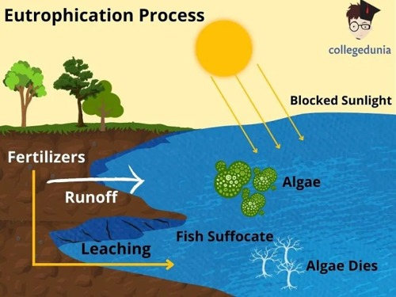
Perubahan zat juga memengaruhi kondisi tanah yang menjadi media utama pertumbuhan tanaman padi dalam sistem pertanian masyarakat Sunda. Penggunaan pupul kimia dan pestisida secara berlebihan dapat menurunkan kesuburan tanah serta mengganggu keseimbangan lingkungan. Sebaliknya, beberapa perubahan zat memberikan dampak positif, seperti proses pengomposan yang mengubah sampah organik menjadi kompos untuk meningkatkan kesuburan tanah (Manahan, 2000). Pengelolaan perubahan zat yang baik menjadi penting untuk menjaga kualitas lingkungan dan mendukung keberlanjutan pertanian yang berkaitan dengan Tradisi Seren Taun. Pemahaman mengenai dampak perubahan zat membantu peserta didik memahami hubungan antara konsep sains, lingkungan, dan kehidupan masyarakat (Kaza, Bhada-Tata & Woerden, 2018).
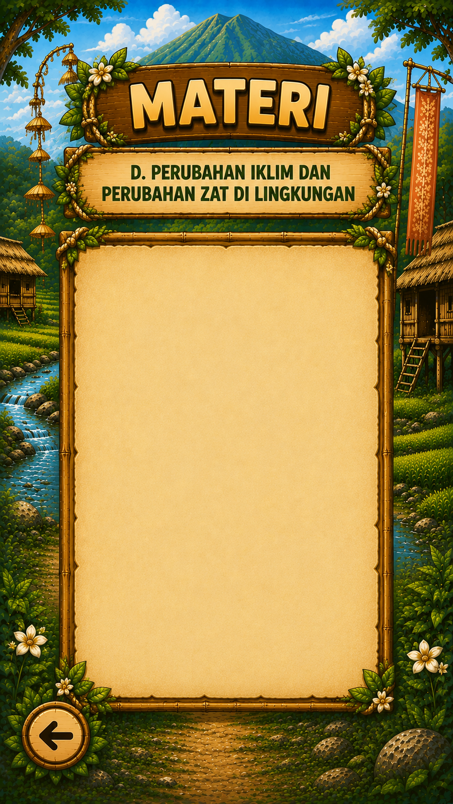
Perubahan iklim merupakan salah satu dampak dari perubahan zat yang terjadi di lingkungan, terutama perubahan zat yang berkaitan dengan komposisi gas di atmosfer. Berbagai aktivitas manusia menyebabkan terjadinya perubahan zat melalui proses fisika maupun reaksi kimia yang menghasilkan gas rumah kaca dan memengaruhi keseimbangan sistem bumi (Manahan, 2000). Salah satu contoh utamanya adalah proses pembakaran bahan bakar fosil seperti batu bara, minyak bumi, dan gas alam yang menghasilkan karbon dioksida sebagai zat baru. Peningkatan kadar karbon dioksida di atmosfer menyebabkan panas matahari terperangkap di bumi sehingga memicu efek rumah kaca dan meningkatkan suhu rata-rata bumi (IPCC, 2021; Arrhenius, 1896).
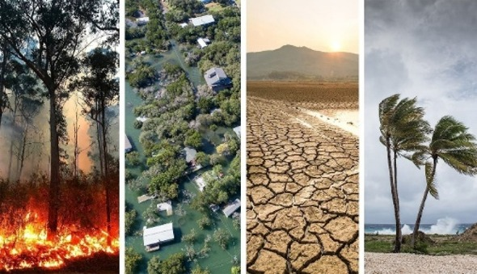
Perubahan iklim memberikan dampak terhadap berbagai aspek kehidupan, termasuk kegiatan pertanian masyarakat yang berkaitan dengan Tradisi Seren Taun. Perubahan pola curah hujan, peningkatan suhu, serta perubahan musim dapat memengaruhi pertumbuhan tanaman padi dan hasil panen masyarakat (IPCC, 2021). Kondisi tersebut menunjukkan bahwa keseimbangan lingkungan sangat penting bagi keberlanjutan sistem pertanian tradisional masyarakat Sunda. Oleh karena itu, pemahaman mengenai perubahan iklim membantu peserta didik memahami hubungan antara aktivitas manusia, perubahan zat, dan dampaknya terhadap kehidupan serta lingkungan sekitar (Nurhayati et al., 2023).
Selain karbon dioksida, perubahan zat di lingkungan juga menghasilkan gas rumah kaca lain, seperti metana dan dinitrogen oksida. Metana dihasilkan dari proses pembusukan bahan organik, aktivitas peternakan, dan pengelolaan sampah, sedangkan dinitrogen oksida berasal dari penggunaan pupuk nitrogen di bidang pertanian. Peningkatan konsentrasi gas-gas tersebut di atmosfer dapat memperkuat efek rumah kaca dan mempercepat terjadinya perubahan iklim. Selain itu, reaksi kimia di atmosfer juga menghasilkan zat lain yang dapat memengaruhi kualitas udara serta keseimbangan energi di atmosfer (Chang, 2010).
Perubahan zat tidak hanya terjadi di udara, tetapi juga berlangsung di perairan dan tanah. Laut dapat menyerap karbon dioksida dari atmosfer sehingga menyebabkan pengasaman laut yang menganggu keseimbangan ekosistem perairan. Perubahan kondisi lingkungan tersebut pada akhirnya berdampak terhadap berbagai aspek kehidupan manusia, termasuk sektor pertanian. Kondisi ini menunjukkan pentingnya menjaga keseimbangan lingkungan sebagaimana tercermin dalam nilai-nilai kearifan lokal masyarakat Sunda melalui Tradisi Seren Taun yang mengajarlan penghormatan terhadap alam dan pemanfaatan sumber daya secara bijak.
a. Pembakaran Bahan Bakar Fosil
Pembakaran batu bara, minyak bumi, dan gas alam untuk pembangkit listrik, transportasi, dan industri merupakan penyumbang utama gas rumah kaca, terutama karbon dioksida. Proses pembakaran ini merupakan perubahan kimia yang menghasilkan zat-zat baru berupa gas yang terlepas ke atmosfer. Peningkatan konsentrasi karbon dioksida menyebabkan semakin banyak panas yang terperangkap di atmosfer, sehingga meningkatkan suhu bumi. Kondisi tersebut dapat memengaruhi keseimbangan lingkungan dan berdampak pada sektor pertanian, termasuk proses penanaman padi yang berkaitan dengan Tradisi Seren Taun masyarakat Sunda. Hal ini menunjukkan pentingnya menjaga lingkungan dan memanfaatkan sumber daya alam secara bijak sebagaimana tercermin dalam nilai-nilai Tradisi Seren Taun.
Bagaimana perubahan komposisi gas di atmosfer dapat memengaruhi kondisi lingkungan? Yuk, simak video berikut untuk memahami proses efek rumah kaca dan kaitannya dengan perubahan iklim.
b. Deforestasi dan Perubahan Penggunaan Lahan
Penebangan hutan dan alih fungsi lahan menjadi permukiman, industri, atau pertanian menyebabkan berkurangnya jumlah tumbuhan yang mampu menyerap karbon dioksida melalui fotosintesis. Selain itu, pembakaran hutan juga menghasilkan karbon dioksida dalam jumlah besar sehingga meningkatkan konsentrasi gas rumah kaca di atmosfer. Perubahan zat yang terjadi selama proses pembakaran biomassa tersebut berkontribusi terhadap terjadinya perubahan iklim dan kerusakan lingkungan. Kondisi tersebut dapat memengaruhi keseimbangan ekosistem serta kegiatan pertanian masyarakat yang berkaitan dengan Tradisi Seren Taun. Hal ini menunjukkan pentingnya menjaga kelestarian lingkungan dan memanfaatkan sumber daya alam secara bijak.
Apa yang terjadi ketika hutan ditebang dan dialihfungsikan? Yuk, simak animasi berikut untuk mengetahui perubahan hutan dan dampaknya terhadap lingkungan.
c. Aktivitas Pertanian dan Peternakan
Kegiatan pertanian dan peternakan menghasilkan gas rumah kaca seperti metana dan dinitrogen oksida. Metana dihasilkan dari proses pencernaan hewan ternak dan pembusukan bahan organik, sedangkan dinitrogen oksida berasal dari penggunaan pupuk nitrogen. Perubahan zat dalam proses tersebut meningkatkan konsentrasi gas rumah kaca di atmosfer sehingga dapat memengaruhi keseimbangan lingkungan dan kondisi iklim. Dampak tersebut juga berpengaruh terhadap kegiatan pertanian masyarakat yang berkaitan dengan Tradisi Seren Taun, terutama pada proses pertumbuhan tanaman padi dan hasil panen. Oleh karena itu, pengelolaan pertanian yang bijak menjadi penting untuk menjaga keberlanjutan lingkungan.
Bagaimana perubahan iklim dapat memengaruhi kegiatan pertanian? Yuk, simak video berikut untuk mengetahui dampaknya terhadap kehidupan petani dan lingkungan.
d. Aktivitas Industri
Berbagai proses industri melibatkan reaksi kimia yang menghasilkan gas-gas rumah kaca dan zat pencemar lainnya. Produksi semen, baja, dan bahan kimia tertentu menghasilkan emisi karbon dioksida dalam jumlah besar. Selain itu, penggunaan bahan pendingin tertentu juga dapat melepaskan gas yang memiliki potensi pemanasan global tinggi. Peningkatan emisi tersebut dapat memengaruhi keseimbangan lingkungan dan mempercepat terjadinya perubahan iklim. Kondisi lingkungan yang berubah dapat berdampak pada sektor pertanian masyarakat, termasuk sistem pertanian tradisional.
Bagaimana aktivitas manusia dapat memengaruhi kondisi lingkungan? Yuk, simak video berikut untuk memahami hubungan aktivitas industri dengan pemanasan global dan perubahan lingkungan.
e. Pengelolaan Sampah dan Limbah
Tempat pembuangan sampah menghasilkan gas metana akibat pembusukan sampah organik secara anaerob. Limbah cair dan padat yang tidak dikelola dengan baik juga dapat melepaskan gas rumah kaca dan mencemari lingkungan. Perubahan zat dalam proses pembusukan ini turut mempercepat terjadinya perubahan iklim. Kondisi lingkungan yang tercemar dapat memengaruhi keseimbangan ekosistem dan kegiatan pertanian masyarakat.
Yuk, temukan fakta-fakta menarik tentang atmosfer, efek rumah kaca, dan perubahan iklim!

f. Faktor Alami
Selain faktor manusia, perubahan iklim juga dipengaruhi oleh faktor alami, seperti aktivitas gunung berapi, variasi aktivitas matahari, dan fenomena alam tertentu. Letusan gunung berapi dapat melepaskan gas dan partikel ke atmosfer yang memengaruhi suhu dan iklim dalam jangka waktu tertentu. Namun, dalam jangka panjang, kontribusi faktor alami terhadap perubahan iklim modern relatif lebih kecil dibandingkan dengan aktivitas manusia. Berbagai upaya mitigasi perubahan iklim saat ini lebih difokuskan pada pengurangan emisi gas rumah kaca yang berasal dari aktivitas manusia.
Perubahan lingkungan tidak hanya dipengaruhi oleh manusia. Yuk, simak video berikut untuk mengenal salah satu fenomena alam yang dapat memengaruhi kondisi bumi.
g. Perubahan Komposisi Atmosfer
Berbagai aktivitas manusia, seperti pembakaran bahan bakar fosil, deforestasi, dan kegiatan industri dapat menghasilkan emisi gas yang dilepaskan ke atmosfer. Aktivitas tersebut menyebabkan peningkatan gas rumah kaca. Perubahan zat di atmosfer, terutama peningkatan konsentrasi gas rumah kaca, dapat mengganggu keseimbangan energi bumi dan menjadi penyebab utama terjadinya perubahan iklim. Akibat dari hal tersebut, berbagai fenomena lingkungan seperti peningkatan suhu global, perubahan pola cuaca, dan kenaikan permukaan laut semakin sering terjadi.
Bagaimana perubahan komposisi gas di atmosfer dapat memengaruhi bumi? Yuk, simak kembali video berikut untuk memahami hubungan gas rumah kaca dengan perubahan iklim.

Tradisi Seren Taun merupakan salah satu warisan budaya agraris masyarakat Sunda yang masih dilestarikan hingga saat ini, terutama di wilayah Jawa Barat dan Banten seperti Cigugur, Sindang Barang, Ciptagelar, Citorek, Cisungsang, dan Purwabakti. Tradisi ini merupakan bentuk ungkapan rasa syukur kepada Tuhan Yang Maha Esa atas hasil panen padi yang telah diperoleh, sekaligus doa untuk kesejahteraan, kesuburan, dan keberkahan pada tahun berikutnya. Seren Taun tidak hanya berfungsi sebagai kegiatan seremonial, tetapi juga memiliki dimensi sosial, religius, dan ekologis yang kuat. Secara etimologis, istilah Seren Taun berasal dari kata seren yang berarti menyerahkan dan taun yang berarti tahun, sehingga dimaknai sebagai penyerahan hasil panen sebagai simbol keberlanjutan kehidupan dan siklus alam (Ferescky, Safitri & Sujarwo, 2024). Melalui Tradisi Seren Taun ini, masyarakat diajarkan untuk menjaga hubungan harmonis antara manusia dan alam serta menanamkan nilai tanggung jawab terhadap kelestarian lingkungan.
Pernahkah kamu melihat tradisi syukuran setelah panen? Yuk, kenali lebih dekat tradisi Seren Taun yang dilakukan oleh masyarakat Kasepuhan Cisungsang melalui video berikut!
Tradisi Seren Taun telah ada sejak masa Kerajaan Pajajaran ketika masyarakat Sunda masih mempercayai Dewi Sri atau Nyi Pohaci Sanghyang Asri sebagai simbol kesuburan dan pelindung tanaman padi. Tradisi ini mencerminkan hubungan spiritual masyarakat dengan alam, khususnya dalam sistem pertanian tradisional yang bergantung pada keseimbangan ekosistem. Selain itu, berbagai simbol seperti leuit (lumbung padi), indung pare, serta penggunaan alat musik tradisional mencerminkan harmoni antara manusia dan alam. Hal tersebut menunjukkan bahwa Seren Taun tidak hanya memiliki makna budaya, tetapi juga mengandung nilai ekologis dan edukatif yang penting (Suryati, 2018). Masyarakat adat memiliki pengetahuan lokal dalam pengelolaan lahan pertanian, konservasi tanah, serta pemanfaatan sumber daya alam yang diwariskan secara turun-temurun. Pengetahuan ini mencerminkan bentuk kearifan lokal dalam menjaga keseimbangan lingkungan melalui praktik yang berkelanjutan.
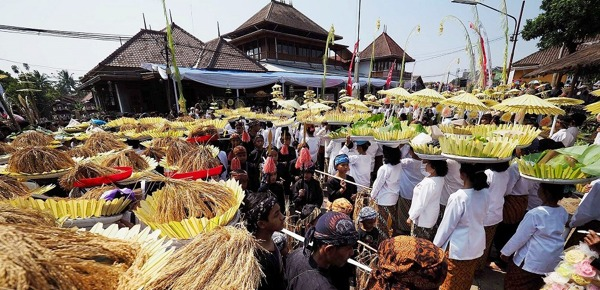
Seiring dengan masuknya agama Islam ke wilayah Sunda, Tradisi Seren Taun mengalami proses akulturasi budaya, dimana unsur-unsur pemujaan kemudian berubah menjadi kegiatan doa bersama, pengajian, dan sedekah bumi tanpa menghilangkan makna utama sebagai ungkapan rasa syukur kepada Tuhan. Proses akulturasi tersebut menunjukkah bahwa Seren Taun memiliki sifat adaptif dan mampu berkembang mengikuti nilai sosial dan religius masyarakat tanpa kehilangan esensi ekologisnya. Hal tersebut juga menunjukkan bahwa Tradisi lokal dapat bertahan dan tetap relevan dalam kehidupan masyarakat modern (Indriani & Al-Faqih, 2020). Kemampuan beradaptasi tersebut menjadikan Seren Taun tidak hanya berfungsi sebagai warisan budaya, tetapi juga sebagai pewarisan nilai-nilai sosial, spiritual, dan lingkungan kepada generasi berikutnya.
Filosofi Seren Taun berakar pada prinsip keseimbangan antara manusia, alam, dan sang cipta. Prinsip hidup masyarakat Sunda seperti silih asih, silih asah, dan silih asuh mencerminkan nilai saling peduli, saling membimbing, dan saling menjaga baik dalam kehidupan sosial maupun dalam menjaga kelestarian lingkungan (Putri & Nurhayati, 2025). Nilai-nilai tersebut menjadi landasan dalam kehidupan masyarakat Sunda untuk menjaga hubungan harmonis antara manusia dan alam. Selain itu, semboyan mupusti pare lain migusti menunjukkan bahwa masyarakat menghormati padi sebagai sumber kehidupan tanpa menempatkannya sebagai objek pemujaan. Nilai ini mengajarkan bahwa manusia memiliki tanggung jawab moral untuk memanfaatkan sumber daya alam secara bijaksana tanpa merusak keseimbangan ekosistem, tradisi Seren Taun dapat dipandang sebagai bentuk pengetahuan ekologis masyarakat lokal yang berkembang melalui pengalaman panjang dalam berinteraksi dengan lingkungan alam (Iskandar & Iskandar, 2018).
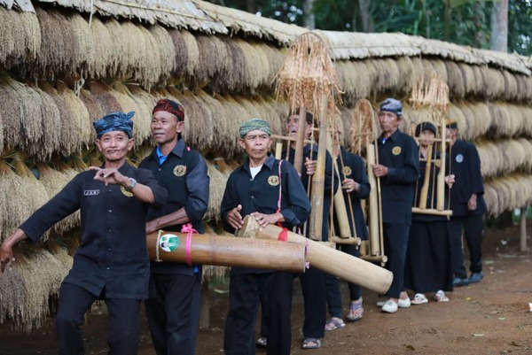
Berbagai simbol dalam Tradisi Seren Taun juga memiliki makna ekologis dan edukatif, seperti leuit (lumbung padi) yang melambangkan ketahanan pangan, indung pare yang melambangkan sumber kehidupan, serta penggunaan alat musik tradisional seperti angklung dan dogdog lojor yang mencerminkan harmoni antara manusia dan alam. Simbol-simbol tersebut tidak hanya memiliki fungsi budaya, tetapi juga berperan sebagai sarana pendidikan lingkungan yang mengajarkan pentingnya menjaga keberlanjutan sumber daya alam (Rini, 2025). Selain itu, Seren Taun juga memiliki makna sosial, budaya, dan spiritual yang mencerminkan pandangan hidup masyarakat Sunda dalam menjaga hubungan harmonis antara manusia, alam, dan Tuhan. Nilai-nilai tersebut sangat relevan untuk diintegrasikan dalam pembelajaran IPA, khususnya dalam membangun karakter peduli lingkungan dan tanggung jawab ekologis peserta didik. Masyarakat adat seperti Kasepuhan Ciptagelar juga mempertahankan prinsip leuweung hejo, cai herang, taneuh subur, rakyat makmur, yang menggambarkan hubungan erat antara kelestarian lingkungan dan kesejahteraan manusia (Prabowo & Sudrajat, 2021).
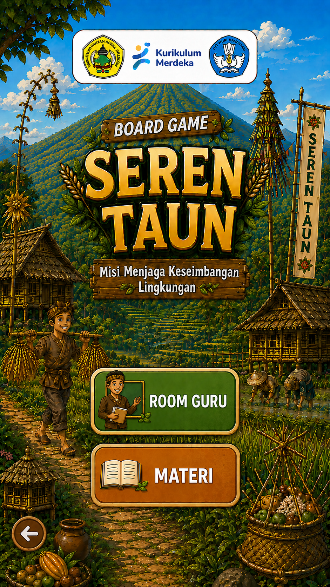
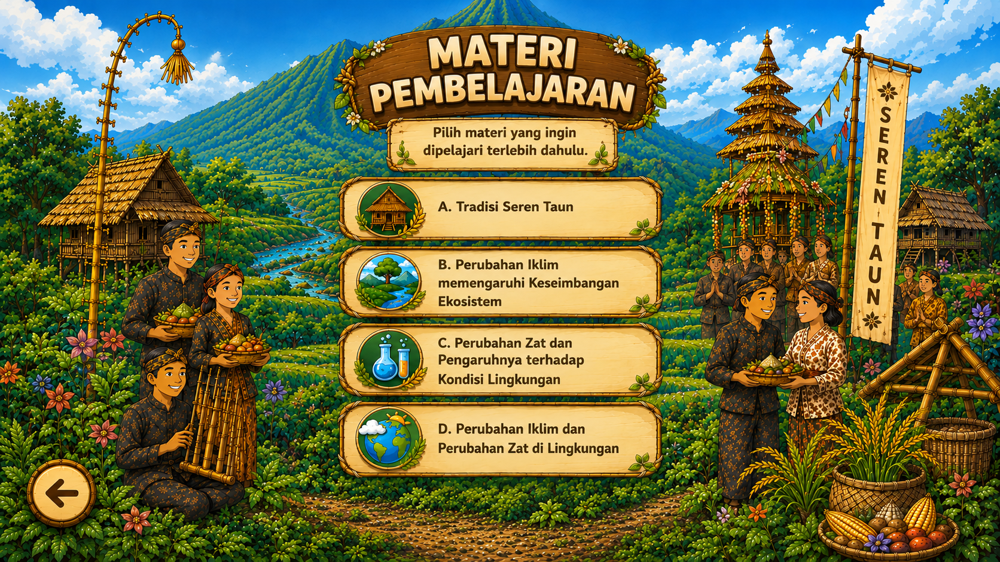

Upacara Seren Taun, masyarakat bekerja sama dan bergotong royong untuk menyelenggarakan upacara tersebut. Hal ini menunjukkan kuatnya nilai kebersamaan dan persatuan dalam kehidupan masyarakat adat. Tradisi Seren Taun juga mengajarkan bahwa manusia tidak dapat hidup tanpa alam. Tanah yang subur, ketersediaan air, udara yang bersih, serta kondisi iklim yang baik sangat memengaruhi keberhasilan panen. Jika lingkungan mengalami kerusakan, maka hasil pertanian juga dapat terganggu.
Masyarakat adat di berbagai wilayah memiliki kesadaran kolektif untuk menjaga kelestarian alam dan memanfaatkan sumber daya secara bijaksana sebagai bagian dari kearifan lokal yang diwariskan secara turun-temurun. Nilai-nilai tersebut tidak hanya berfungsi sebagai pedoman dalam kehidupan sehari-hari, tetapi juga menjadi bentuk pengetahuan ekologis lokal yang relevan dalam upaya menjaga keseimbangan lingkungan. Kearifan lokal Seren Taun mencerminkan adanya hubungan harmonis antara manusia, alam, dan budaya yang terus dipertahankan dari generasi ke generasi. Nilai-nilai tersebut menjadi landasan penting dalam mengintegrasikan kearifan lokal ke dalam pembelajaran IPA guna meningkatkan pemahaman dan kepedulian peserta didik terhadap lingkungan.
Melalui Seren Taun, peserta didik dapat memahami bahwa tradisi budaya tidak hanya berkaitan dengan adat istiadat, tetapi juga mencerminkan hubungan antara manusia dan lingkungan. Dalam Tradisi Seren Taun ini terdapat berbagai aktivitas yang berkaitan dengan konsep IPA, seperti menjaga keseimbangan ekosistem dan pelestarian lingkungan yang termasuk dalam materi interaksi makhluk hidup, penggunaan sumber daya alam yang bijak serta pemanfaatan bahan-bahan alami yang berkaitan dengan jenis dan sifat zat, hingga keterkaitan musim tanam dan kondisi cuaca yang berhubungan dengan perubahan iklim dan dampaknya terhadap kehidupan. Tradisi Seren Taun dapat dijadikan sebagai konteks pembelajaran IPA terpadu yang relevan dengan kehidupan sehari-hari peserta didik sekaligus membantu menanamkan nilai kepedulian terhadap lingkungan.
Pernahkah kamu merasakan cuaca yang semakin tidak menentu? Yuk, simak dua video berikut untuk mengetahui bagaimana perubahan iklim dapat memengaruhi keseimbangan ekosistem di sekitar kita.
Keseimbangan ekosistem merupakan kondisi ketika komponen biotik dan abiotik dalam suatu lingkungan berada dalam keadaan yang relatif stabil sehingga proses ekologis seperti aliran energi dan siklus materi dapat berlangsung secara berkelanjutan. Keseimbangan memungkinkan ekosistem mempertahankan kelangsungan hidup berbagai jenis makhluk hidup serta menjaga kestabilan lingkungan dalam jangka panjang (Haya et al., 2025). Menurut Begon, Townsend, dan Harper dalam buku Ecology: From Individuals to Ecosystems, keseimbangan ekosistem sangat dipengaruhi oleh interaksi antarorganisme serta hubungan antara organisme dengan lingkungannya (Begon, Townsend & Harper, 2006). Komponen biotik seperti tumbuhan, hewan, dan mikroorganisme berinteraksi dengan komponen abiotik seperti tanah, air, udara, cahaya matahari, dan suhu sehingga membentuk suatu sistem ekologis yang dinamis. Hubungan antara komponen biotik dan abiotik menjadi faktor penting dalam menjaga keseimbangan suatu ekosistem (Enquist et al., 2015).
Hubungan antara komponen biotik dan abiotik dapat ditemukan dalam praktik pertanian tradisional yang berkaitan dengan Tradisi Seren Taun. Dalam proses penanaman padi, masyarakat memanfaatkan unsur-unsur abiotik seperti tanah, air, cahaya matahari, udara dan kondisi cuaca untuk mendukung pertumbuhan tanaman padi sebagai komponen biotik utama dalam ekosistem sawah. Selain tanaman padi, terdapat juga organisme lain seperti serangga, burung, cacing, dan mikroorganisme tanah yang berperan dalam menjaga keseimbangan ekosistem pertanian. Hubungan antara komponen biotik dan abiotik tersebut menunjukkan bahwa keberhasilan pertanian tradisional sangat dipengaruhi oleh kondisi lingkungan yang seimbang. Melalui praktik pertanian yang diwariskan secara turun-temurun dalam Tradisi Seren Taun, masyarakat menunjukkan adanya upaya menjaga keselarasan antara manusia dan alam agar keberlanjutan lingkungan tetap terpelihara (Triana & Andi, 2023).
Hubungan antarorganisme dalam suatu ekosistem membentuk jaringan interaksi seperti rantai makanan dan jaring-jaring makanan. Interaksi tersebut memungkinkan terjadinya aliran energi dari produsen menuju konsumen hingga pengurai. Aliran energi tersebut menunjukkan adanya ketergantungan antarorganisme dalam memperoleh sumber energi untuk mempertahankan kelangsungan hidupnya. Dalam jaring-jaring makanan, satu organisme dapat memiliki lebih dari satu hubungan dengan organisme lainnya sehingga membentuk pola interaksi yang lebih kompleks. Keberadaan hubungan yang beragam tersebut membantu menjaga kestabilan ekosistem karena organisme memiliki alternatif sumber makanan ketika terjadi perubahan pada populasi tertentu. Pada struktur interaksi yang terbentuk dalam jaring-jaring makanan menunjukkan bahwa organisme dalam ekosistem saling berhubungan satu sama lain dalam suatu sistem kehidupan yang dinamis (Kwak & Park, 2020).
Dalam ekosistem sawah, tanaman padi berperan sebagai produsen yang menjadi sumber makanan bagi berbagai organisme lain seperti serangga, burung, dan hewan kecil lainnya. Organisme-organisme tersebut kemudian membentuk rantai makanan dan jaring-jaring makanan yang menunjukkan adanya hubungan saling ketergantungan antara makhluk hidup. Keberadaan mikroorganisme tanah juga berperan sebagai pengurai yang membantu mengembalikan unsur hara ke dalam tanah sehingga kesuburan lahan pertanian tetap terjaga. Interaksi antarorganisme tersebut menunjukkan bahwa sistem pertanian tradisional yang berkaitan dengan Tradisi Seren Taun tidak hanya berfungsi sebagai pemenuhan kebutuhan pangan, tetapi juga mencerminkan adanya hubungan saling ketergantungan antara makhluk hidup dan lingkungannya dalam menjaga keseimbangan ekosistem sawah (Apriyana et al., 2025).
Stabilitas ekosistem juga dipengaruhi oleh kompleksitas interaksi yang terjadi di dalamnya. Ekosistem dengan struktur interaksi yang lebih kompleks cenderung memiliki kemampuan yang lebih baik dalam mempertahankan keseimbangannya. Hal ini terjadi karena organisme dalam ekosistem memiliki lebih dari satu hubungan dalam jaring-jaring makanan sehingga terdapat berbagai jalur aliran energi yang saling terhubung. Kondisi tersebut membuat ekosistem lebih mampu menyesuaikan diri ketika terjadi perubahan pada salah satu populasi organisme. Gangguan terhadap ekosistem dapat berupa perubahan kondisi lingkungan, kerusakan habitat, maupun aktivitas manusia yang berlebihan seperti eksploitasi sumber daya alam. Gangguan tersebut dapat memengaruhi struktur komunitas dan fungsi ekosistem secara keseluruhan sehingga berdampak pada keseimbangan lingkungan (Cui, Marsland & Mehta, 2024).
Keseimbangan ekosistem juga dapat ditemukan dalam sistem pertanian tradisional yang berkaitan dengan Tradisi Seren Taun. Masyarakat adat berupaya menjaga keseimbangan lingkungan melalui pengelolaan lahan pertanian secara bijak, menjaga kesuburan tanah, serta memanfaatkan sumber daya alam sesuai kebutuhan agar ekosistem sawah tetap stabil. Praktik tersebut menunjukkan adanya kesadaran masyarakat dalam mengurangi kerusakan lingkungan akibat aktivitas manusia yang berlebihan. Nilai-nilai kearifan lokal yang terdapat dalam Tradisi Seren Taun mencerminkan upaya masyarakat dalam menjaga hubungan harmonis antara manusia dan alam sehingga keberlanjutan lingkungan dapat tetap terpelihara (Amalia & Haryana, 2023).
Interaksi antarspesies seperti predasi, kompetisi, dan simbiosis berperan dalam mengatur jumlah populasi serta menjaga kestabilan komunitas biologis dalam suatu ekosistem (Rutherford, 2018). Hubungan antarorganisme juga membentuk jaringan interaksi ekologis yang kompleks seperti rantai makanan dan jaring-jaring makanan. Jaringan hubungan tersebut memungkinkan terjadinya aliran energi dari produsen menuju konsumen hingga dekomposer sehingga fungsi ekosistem dapat berlangsung secara berkelanjutan (Heffelfinger et al., 2020). Interaksi antarorganisme juga memengaruhi proses ekologis yang lebih luas seperti siklus materi dan dinamika komunitas sehingga setiap organisme memiliki peran menjaga keseimbangan lingkungan.
Konsep hubungan antara makhluk hidup dan lingkungan tidak hanya dipahami melalui konsep ilmiah, tetapi juga tercermin dalam kehidupan masyarakat Sunda melalui berbagai praktik budaya dan tradisi lokal yang diwariskan secara turun-temurun. Salah satu tradisi yang mencerminkan hubungan tersebut adalah Seren Taun yang dilaksanakan sebagai ungkapan rasa syukur atas hasil panen padi sekaligus bentuk penghormatan masyarakat terhadap alam yang telah memberikan kehidupan (Amalia & Haryana, 2023). Tradisi Seren Taun ini menunjukkan adanya kesadaran masyarakat untuk menjaga keseimbangan antara manusia dan lingkungan demi keberlanjutan kehidupan. Nilai-nilai yang terkandung dalam Tradisi Seren Taun mencerminkan kearifan lokal masyarakat Sunda dalam membangun hubungan yang harmonis antara manusia dan alam (Triana, 2023).
Pelaksanaan Tradisi Seren Taun berkaitan erat dengan praktik pertanian tradisional masyarakat Sunda. Dalam Tradisi Seren Taun ini, masyarakat membawa hasil panen padi untuk disimpan di lumbung padi atau leuit sebagai simbol keberlanjutan kehidupan dan ketahanan pangan masyarakat adat. Padi dipandang sebagai sumber kehidupan yang harus dihormati sehingga masyarakat menerapkan berbagai aturan dalam pengelolaan pertanian, seperti menjaga kesuburan tanah dan memanfaatkan sumber daya alam secara bijak. Praktik tersebut menunjukkan adanya nilai kearifan lokal dalam pengelolaan sumber daya alam yang diwariskan secara turun-temurun (Iskandar & Iskandar, 2016).
Tradisi Seren Taun juga mencerminkan pengetahuan lokal masyarakat dalam menjaga keseimbangan lingkungan melalui sistem pertanian tradisional. Dalam sistem tersebut, dimana tanaman padi berperan sebagai produsen yang menjadi sumber energi bagi organisme lain seperti serangga, burung, dan mikroorganisme tanah sehingga membentuk hubungan ekologis dalam ekosistem sawah (Iskandar & Iskandar, 2018). Interaksi tersebut menunjukkan bahwa praktik pertanian tradisional tidak hanya bertujuan menghasilkan pangan, tetapi juga menjaga keberlanjutan lingkungan. Kondisi tersebut mencerminkan adanya nilai kearifan lokal masyarakat dalam pengelolaan lingkungan secara berkelanjutan (Apriyana et al., 2025).
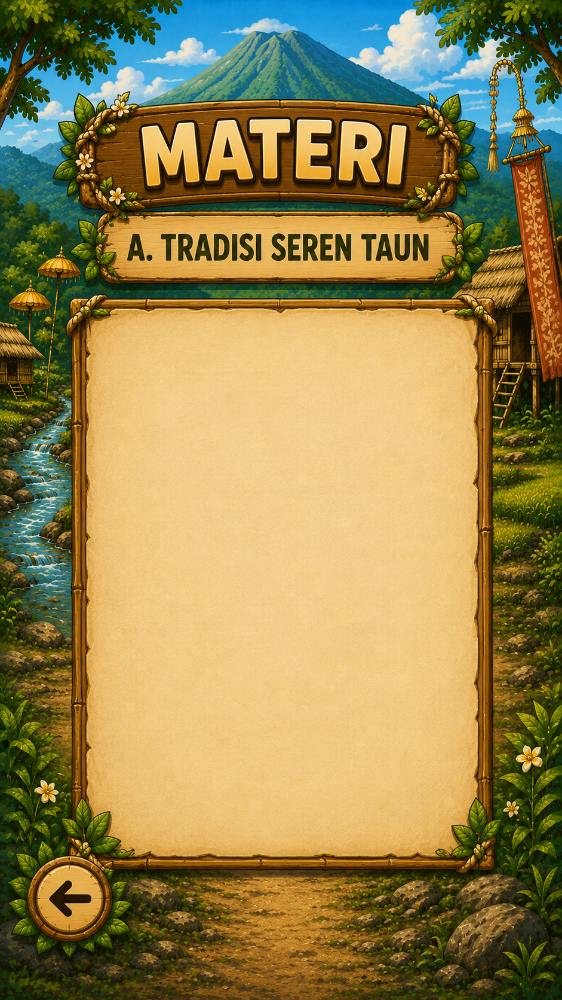
Tradisi Seren Taun merupakan salah satu warisan budaya agraris masyarakat Sunda yang masih dilestarikan hingga saat ini, terutama di wilayah Jawa Barat dan Banten seperti Cigugur, Sindang Barang, Ciptagelar, Citorek, Cisungsang, dan Purwabakti. Tradisi ini merupakan bentuk ungkapan rasa syukur kepada Tuhan Yang Maha Esa atas hasil panen padi yang telah diperoleh, sekaligus doa untuk kesejahteraan, kesuburan, dan keberkahan pada tahun berikutnya. Seren Taun tidak hanya berfungsi sebagai kegiatan seremonial, tetapi juga memiliki dimensi sosial, religius, dan ekologis yang kuat. Secara etimologis, istilah Seren Taun berasal dari kata seren yang berarti menyerahkan dan taun yang berarti tahun, sehingga dimaknai sebagai penyerahan hasil panen sebagai simbol keberlanjutan kehidupan dan siklus alam (Ferescky, Safitri & Sujarwo, 2024). Melalui Tradisi Seren Taun ini, masyarakat diajarkan untuk menjaga hubungan harmonis antara manusia dan alam serta menanamkan nilai tanggung jawab terhadap kelestarian lingkungan.
Pernahkah kamu melihat tradisi syukuran setelah panen? Yuk, kenali lebih dekat tradisi Seren Taun yang dilakukan oleh masyarakat Kasepuhan Cisungsang melalui video berikut!
Tradisi Seren Taun telah ada sejak masa Kerajaan Pajajaran ketika masyarakat Sunda masih mempercayai Dewi Sri atau Nyi Pohaci Sanghyang Asri sebagai simbol kesuburan dan pelindung tanaman padi. Tradisi ini mencerminkan hubungan spiritual masyarakat dengan alam, khususnya dalam sistem pertanian tradisional yang bergantung pada keseimbangan ekosistem. Selain itu, berbagai simbol seperti leuit (lumbung padi), indung pare, serta penggunaan alat musik tradisional mencerminkan harmoni antara manusia dan alam. Hal tersebut menunjukkan bahwa Seren Taun tidak hanya memiliki makna budaya, tetapi juga mengandung nilai ekologis dan edukatif yang penting (Suryati, 2018). Masyarakat adat memiliki pengetahuan lokal dalam pengelolaan lahan pertanian, konservasi tanah, serta pemanfaatan sumber daya alam yang diwariskan secara turun-temurun. Pengetahuan ini mencerminkan bentuk kearifan lokal dalam menjaga keseimbangan lingkungan melalui praktik yang berkelanjutan.
Seiring dengan masuknya agama Islam ke wilayah Sunda, Tradisi Seren Taun mengalami proses akulturasi budaya, dimana unsur-unsur pemujaan kemudian berubah menjadi kegiatan doa bersama, pengajian, dan sedekah bumi tanpa menghilangkan makna utama sebagai ungkapan rasa syukur kepada Tuhan. Proses akulturasi tersebut menunjukkan bahwa Seren Taun memiliki sifat adaptif dan mampu berkembang mengikuti nilai sosial dan religius masyarakat tanpa kehilangan esensi ekologisnya. Hal tersebut juga menunjukkan bahwa tradisi lokal dapat bertahan dan tetap relevan dalam kehidupan masyarakat modern (Indriani & Al-Faqih, 2020). Kemampuan beradaptasi tersebut menjadikan Seren Taun tidak hanya berfungsi sebagai warisan budaya, tetapi juga sebagai pewarisan nilai-nilai sosial, spiritual, dan lingkungan kepada generasi berikutnya.
Filosofi Seren Taun berakar pada prinsip keseimbangan antara manusia, alam, dan Sang Pencipta. Prinsip hidup masyarakat Sunda seperti silih asih, silih asah, dan silih asuh mencerminkan nilai saling peduli, saling membimbing, dan saling menjaga baik dalam kehidupan sosial maupun dalam menjaga kelestarian lingkungan (Putri & Nurhayati, 2025). Nilai-nilai tersebut menjadi landasan dalam kehidupan masyarakat Sunda untuk menjaga hubungan harmonis antara manusia dan alam. Selain itu, semboyan mupusti pare lain migusti menunjukkan bahwa masyarakat menghormati padi sebagai sumber kehidupan tanpa menempatkannya sebagai objek pemujaan. Nilai ini mengajarkan bahwa manusia memiliki tanggung jawab moral untuk memanfaatkan sumber daya alam secara bijaksana tanpa merusak keseimbangan ekosistem. Tradisi Seren Taun dapat dipandang sebagai bentuk pengetahuan ekologis masyarakat lokal yang berkembang melalui pengalaman panjang dalam berinteraksi dengan lingkungan alam (Iskandar & Iskandar, 2018).
Berbagai simbol dalam Tradisi Seren Taun juga memiliki makna ekologis dan edukatif, seperti leuit (lumbung padi) yang melambangkan ketahanan pangan, indung pare yang melambangkan sumber kehidupan, serta penggunaan alat musik tradisional seperti angklung dan dogdog lojor yang mencerminkan harmoni antara manusia dan alam. Simbol-simbol tersebut tidak hanya memiliki fungsi budaya, tetapi juga berperan sebagai sarana pendidikan lingkungan yang mengajarkan pentingnya menjaga keberlanjutan sumber daya alam (Rini, 2025). Selain itu, Seren Taun juga memiliki makna sosial, budaya, dan spiritual yang mencerminkan pandangan hidup masyarakat Sunda dalam menjaga hubungan harmonis antara manusia, alam, dan Tuhan. Nilai-nilai tersebut sangat relevan untuk diintegrasikan dalam pembelajaran IPA, khususnya dalam membangun karakter peduli lingkungan dan tanggung jawab ekologis peserta didik. Masyarakat adat seperti Kasepuhan Ciptagelar juga mempertahankan prinsip leuweung hejo, cai herang, taneuh subur, rakyat makmur, yang menggambarkan hubungan erat antara kelestarian lingkungan dan kesejahteraan manusia (Prabowo & Sudrajat, 2021).
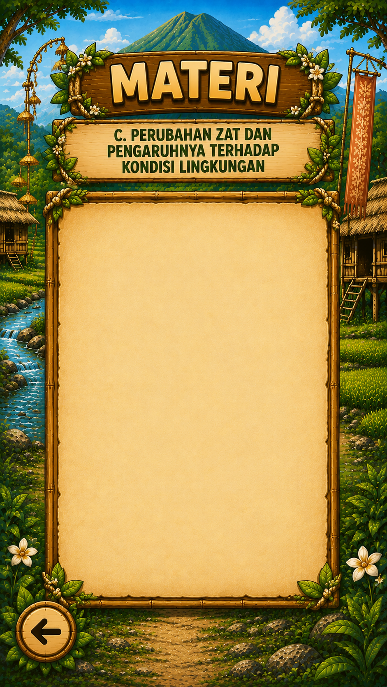
Perubahan zat merupakan proses ketika suatu zat mengalami perubahan sifat, bentuk, maupun susunannya. Dalam kehidupan sehari-hari, perubahan zat dapat terjadi secara alami maupun akibat aktivitas manusia sehingga memberikan dampak terhadap lingkungan sekitar. Secara umum, perubahan zat dibedakan menjadi perubahan fisika yang tidak menghasilkan zat baru dan perubahan kimia yang menghasilkan zat baru dengan sifat berbeda dari zat semula (Wandini et al., 2022). Perbedaan kedua jenis tersebut menjadi konsep dasar yang penting dipahami dalam pembelajaran IPA karena berkaitan dengan berbagai fenomena yang terjadi di lingkungan sekitar peserta didik.
Konsep perubahan zat dapat dikaitkan dengan sistem pertanian tradisional masyarakat Sunda yang berkaitan dengan Tradisi Seren Taun, khususnya dalam proses penanaman hingga pengolahan padi. Pada proses pertanian tersebut, padi mengalami berbagai perubahan akibat pengaruh air, cahaya matahari, dan unsur hara selama masa pertumbuhan. Setelah dipanen, terdapat perubahan fisika seperti penjemuran padi yang tidak menghasilkan zat baru serta perubahan pada proses pemasakan beras yang menyebabkan perubahan sifat bahan pangan (Florentina et al., 2016). Kegiatan tersebut menunjukkan bahwa konsep perubahan zat tidak hanya dipelajari secara ilmiah, tetapi juga tercermin dalam praktik pertanian dan budaya masyarakat Sunda.
Perubahan fisika seperti mencair, membeku, menguap, dan mengembun berkaitan dengan perubahan wujud zat yang banyak dijumpai dalam kehidupan sehari-hari. Proses tersebut berperan dalam siklus air yang memengaruhi kelembapan udara, curah hujan, serta ketersediaan air bagi kegiatan pertanian. Dalam masyarakat Sunda, kondisi alam dan ketersediaan air menjadi faktor penting dalam proses penanaman padi yang berkaitan dengan Tradisi Seren Taun. Tradisi Seren Taun dilaksanakan sebagai bentuk rasa syukur atas hasil panen yang diperoleh melalui proses pertanian yang bergantung pada keseimbangan kondisi lingkungan. Melalui pemahaman mengenai perubahan wujud zat dan siklus air, peserta didik dapat memahami keterkaitan antara konsep sains dengan praktik budaya masyarakat di lingkungan sekitar (Ramadhani et al., 2023).
Perubahan kimia juga dapat dikaitkan dengan sistem pertanian tradisional yang mendukung pelaksanaan Tradisi Seren Taun. Dalam kegiatan pertanian, perubahan kimia terjadi pada proses penguraian bahan organik di tanah yang membantu meningkatkan kesuburan tanah bagi pertumbuhan tanaman padi (Sianturi, Fauzi & Damanik, 2018). Selain itu, perubahan kimia juga terjadi pada proses pengolahan hasil panen padi yang menyebabkan perubahan sifat bahan pangan. Kesuburan tanah dan keberhasilan panen menjadi hal penting dalam Tradisi Seren Taun karena padi dipandang sebagai sumber kehidupan masyarakat. Kondisi tersebut menunjukkan bahwa konsep perubahan kimia tidak hanya dipelajari secara ilmiah, tetapi juga berkaitan dengan praktik pertanian dan budaya masyarakat Sunda.
Perubahan zat, baik perubahan fisika maupun perubahan kimia dapat memberikan dampak terhadap kondisi lingkungan. Salah satu dampaknya terlihat pada pencemaran udara akibat proses pembakaran kendaraan, industri, maupun sampah yang menghasilkan berbagai gas pencemaran sehingga menurunkan kualitas lingkungan (Arifin & Rahman, 2024). Kondisi lingkungan yang tercemar dapat memengaruhi kegiatan pertanian yang menjadi sumber kehidupan masyarakat agraris, termasuk masyarakat Sunda dalam pelaksanaan Tradisi Seren Taun. Selain itu, limbah rumah tangga, pertanian, dan industri juga dapat menyebabkan perubahan zat di perairan yang memicu eutrofikasi akibat meningkatnya kadar nitrat dan fosfat di dalam air (Adawiah et al., 2021). Kondisi tersebut dapat mengganggu keseimbangan ekosistem perairan serta memengaruhi kualitas lingkungan sekitarnya.
Yuk, simak video berikut untuk memahami perubahan zat dan dampaknya terhadap lingkungan.
Kandungan nitrat dan fosfat yang tinggi juga berpengaruh terhadap kelimpahan fitoplankton yang menjadi indikator kesuburan sekaligus kualitas perairan (Nuryani & Sari, 2023). Selain itu, aktivitas manusia di sekitar perairan dapat meningkatkan kandungan nutrien seperti nitrogen dan fosfor yang memengaruhi status trofik perairan serta memicu terjadinya eutrofikasi (Aryani et al., 2021). Kondisi eutrofikasi dapat menyebabkan pertumbuhan alga secara berlebihan sehingga mengurangi kadar oksigen terlarut di dalam air. Penurunan kadar oksigen tersebut dapat mengganggu kehidupan organisme perairan dan merusak keseimbangan ekosistem. Dampak tersebut menunjukkan bahwa perubahan zat di lingkungan perairan perlu dikelola dengan baik agar kualitas lingkungan tetap terjaga.
Perubahan zat juga memengaruhi kondisi tanah yang menjadi media utama pertumbuhan tanaman padi dalam sistem pertanian masyarakat Sunda. Penggunaan pupuk kimia dan pestisida secara berlebihan dapat menurunkan kesuburan tanah serta mengganggu keseimbangan lingkungan. Sebaliknya, beberapa perubahan zat memberikan dampak positif, seperti proses pengomposan yang mengubah sampah organik menjadi kompos untuk meningkatkan kesuburan tanah (Manahan, 2000). Pengelolaan perubahan zat yang baik menjadi penting untuk menjaga kualitas lingkungan dan mendukung keberlanjutan pertanian yang berkaitan dengan Tradisi Seren Taun. Pemahaman mengenai dampak perubahan zat membantu peserta didik memahami hubungan antara konsep sains, lingkungan, dan kehidupan masyarakat (Kaza, Bhada-Tata & Woerden, 2018).

Perubahan iklim merupakan salah satu dampak dari perubahan zat yang terjadi di lingkungan, terutama perubahan zat yang berkaitan dengan komposisi gas di atmosfer. Berbagai aktivitas manusia menyebabkan terjadinya perubahan zat melalui proses fisika maupun reaksi kimia yang menghasilkan gas rumah kaca dan memengaruhi keseimbangan sistem bumi (Manahan, 2000). Salah satu contoh utamanya adalah proses pembakaran bahan bakar fosil seperti batu bara, minyak bumi, dan gas alam yang menghasilkan karbon dioksida sebagai zat baru. Peningkatan kadar karbon dioksida di atmosfer menyebabkan panas matahari terperangkap di bumi sehingga memicu efek rumah kaca dan meningkatkan suhu rata-rata bumi (IPCC, 2021; Arrhenius, 1896).
Perubahan iklim memberikan dampak terhadap berbagai aspek kehidupan, termasuk kegiatan pertanian masyarakat yang berkaitan dengan Tradisi Seren Taun. Perubahan pola curah hujan, peningkatan suhu, serta perubahan musim dapat memengaruhi pertumbuhan tanaman padi dan hasil panen masyarakat (IPCC, 2021). Kondisi tersebut menunjukkan bahwa keseimbangan lingkungan sangat penting bagi keberlanjutan sistem pertanian tradisional masyarakat Sunda. Oleh karena itu, pemahaman mengenai perubahan iklim membantu peserta didik memahami hubungan antara aktivitas manusia, perubahan zat, dan dampaknya terhadap kehidupan serta lingkungan sekitar (Nurhayati et al., 2023).
Selain karbon dioksida, perubahan zat di lingkungan juga menghasilkan gas rumah kaca lain, seperti metana dan dinitrogen oksida. Metana dihasilkan dari proses pembusukan bahan organik, aktivitas peternakan, dan pengelolaan sampah, sedangkan dinitrogen oksida berasal dari penggunaan pupuk nitrogen di bidang pertanian. Peningkatan konsentrasi gas-gas tersebut di atmosfer dapat memperkuat efek rumah kaca dan mempercepat terjadinya perubahan iklim. Selain itu, reaksi kimia di atmosfer juga menghasilkan zat lain yang dapat memengaruhi kualitas udara serta keseimbangan energi di atmosfer (Chang, 2010).
Perubahan zat tidak hanya terjadi di udara, tetapi juga berlangsung di perairan dan tanah. Laut dapat menyerap karbon dioksida dari atmosfer sehingga menyebabkan pengasaman laut yang menganggu keseimbangan ekosistem perairan. Perubahan kondisi lingkungan tersebut pada akhirnya berdampak terhadap berbagai aspek kehidupan manusia, termasuk sektor pertanian. Kondisi ini menunjukkan pentingnya menjaga keseimbangan lingkungan sebagaimana tercermin dalam nilai-nilai kearifan lokal masyarakat Sunda melalui Tradisi Seren Taun yang mengajarlan penghormatan terhadap alam dan pemanfaatan sumber daya secara bijak.
a. Pembakaran Bahan Bakar Fosil
Pembakaran batu bara, minyak bumi, dan gas alam untuk pembangkit listrik, transportasi, dan industri merupakan penyumbang utama gas rumah kaca, terutama karbon dioksida. Proses pembakaran ini merupakan perubahan kimia yang menghasilkan zat-zat baru berupa gas yang terlepas ke atmosfer. Peningkatan konsentrasi karbon dioksida menyebabkan semakin banyak panas yang terperangkap di atmosfer, sehingga meningkatkan suhu bumi. Kondisi tersebut dapat memengaruhi keseimbangan lingkungan dan berdampak pada sektor pertanian, termasuk proses penanaman padi yang berkaitan dengan Tradisi Seren Taun masyarakat Sunda. Hal ini menunjukkan pentingnya menjaga lingkungan dan memanfaatkan sumber daya alam secara bijak sebagaimana tercermin dalam nilai-nilai Tradisi Seren Taun.
Bagaimana perubahan komposisi gas di atmosfer dapat memengaruhi kondisi lingkungan? Yuk, simak video berikut untuk memahami proses efek rumah kaca dan kaitannya dengan perubahan iklim.
b. Deforestasi dan Perubahan Penggunaan Lahan
Penebangan hutan dan alih fungsi lahan menjadi permukiman, industri, atau pertanian menyebabkan berkurangnya jumlah tumbuhan yang mampu menyerap karbon dioksida melalui fotosintesis. Selain itu, pembakaran hutan juga menghasilkan karbon dioksida dalam jumlah besar sehingga meningkatkan konsentrasi gas rumah kaca di atmosfer. Perubahan zat yang terjadi selama proses pembakaran biomassa tersebut berkontribusi terhadap terjadinya perubahan iklim dan kerusakan lingkungan. Kondisi tersebut dapat memengaruhi keseimbangan ekosistem serta kegiatan pertanian masyarakat yang berkaitan dengan Tradisi Seren Taun. Hal ini menunjukkan pentingnya menjaga kelestarian lingkungan dan memanfaatkan sumber daya alam secara bijak.
Apa yang terjadi ketika hutan ditebang dan dialihfungsikan? Yuk, simak animasi berikut untuk mengetahui perubahan hutan dan dampaknya terhadap lingkungan.
c. Aktivitas Pertanian dan Peternakan
Kegiatan pertanian dan peternakan menghasilkan gas rumah kaca seperti metana dan dinitrogen oksida. Metana dihasilkan dari proses pencernaan hewan ternak dan pembusukan bahan organik, sedangkan dinitrogen oksida berasal dari penggunaan pupuk nitrogen. Perubahan zat dalam proses tersebut meningkatkan konsentrasi gas rumah kaca di atmosfer sehingga dapat memengaruhi keseimbangan lingkungan dan kondisi iklim. Dampak tersebut juga berpengaruh terhadap kegiatan pertanian masyarakat yang berkaitan dengan Tradisi Seren Taun, terutama pada proses pertumbuhan tanaman padi dan hasil panen. Oleh karena itu, pengelolaan pertanian yang bijak menjadi penting untuk menjaga keberlanjutan lingkungan.
Bagaimana perubahan iklim dapat memengaruhi kegiatan pertanian? Yuk, simak video berikut untuk mengetahui dampaknya terhadap kehidupan petani dan lingkungan.
d. Aktivitas Industri
Berbagai proses industri melibatkan reaksi kimia yang menghasilkan gas-gas rumah kaca dan zat pencemar lainnya. Produksi semen, baja, dan bahan kimia tertentu menghasilkan emisi karbon dioksida dalam jumlah besar. Selain itu, penggunaan bahan pendingin tertentu juga dapat melepaskan gas yang memiliki potensi pemanasan global tinggi. Peningkatan emisi tersebut dapat memengaruhi keseimbangan lingkungan dan mempercepat terjadinya perubahan iklim. Kondisi lingkungan yang berubah dapat berdampak pada sektor pertanian masyarakat, termasuk sistem pertanian tradisional.
Bagaimana aktivitas manusia dapat memengaruhi kondisi lingkungan? Yuk, simak video berikut untuk memahami hubungan aktivitas industri dengan pemanasan global dan perubahan lingkungan.
e. Pengelolaan Sampah dan Limbah
Tempat pembuangan sampah menghasilkan gas metana akibat pembusukan sampah organik secara anaerob. Limbah cair dan padat yang tidak dikelola dengan baik juga dapat melepaskan gas rumah kaca dan mencemari lingkungan. Perubahan zat dalam proses pembusukan ini turut mempercepat terjadinya perubahan iklim. Kondisi lingkungan yang tercemar dapat memengaruhi keseimbangan ekosistem dan kegiatan pertanian masyarakat.
Yuk, temukan fakta-fakta menarik tentang atmosfer, efek rumah kaca, dan perubahan iklim!
f. Faktor Alami
Selain faktor manusia, perubahan iklim juga dipengaruhi oleh faktor alami, seperti aktivitas gunung berapi, variasi aktivitas matahari, dan fenomena alam tertentu. Letusan gunung berapi dapat melepaskan gas dan partikel ke atmosfer yang memengaruhi suhu dan iklim dalam jangka waktu tertentu. Namun, dalam jangka panjang, kontribusi faktor alami terhadap perubahan iklim modern relatif lebih kecil dibandingkan dengan aktivitas manusia. Berbagai upaya mitigasi perubahan iklim saat ini lebih difokuskan pada pengurangan emisi gas rumah kaca yang berasal dari aktivitas manusia.
Perubahan lingkungan tidak hanya dipengaruhi oleh manusia. Yuk, simak video berikut untuk mengenal salah satu fenomena alam yang dapat memengaruhi kondisi bumi.
g. Perubahan Komposisi Atmosfer
Berbagai aktivitas manusia, seperti pembakaran bahan bakar fosil, deforestasi, dan kegiatan industri dapat menghasilkan emisi gas yang dilepaskan ke atmosfer. Aktivitas tersebut menyebabkan peningkatan gas rumah kaca. Perubahan zat di atmosfer, terutama peningkatan konsentrasi gas rumah kaca, dapat mengganggu keseimbangan energi bumi dan menjadi penyebab utama terjadinya perubahan iklim. Akibat dari hal tersebut, berbagai fenomena lingkungan seperti peningkatan suhu global, perubahan pola cuaca, dan kenaikan permukaan laut semakin sering terjadi.
Bagaimana perubahan komposisi gas di atmosfer dapat memengaruhi bumi? Yuk, simak kembali video berikut untuk memahami hubungan gas rumah kaca dengan perubahan iklim.
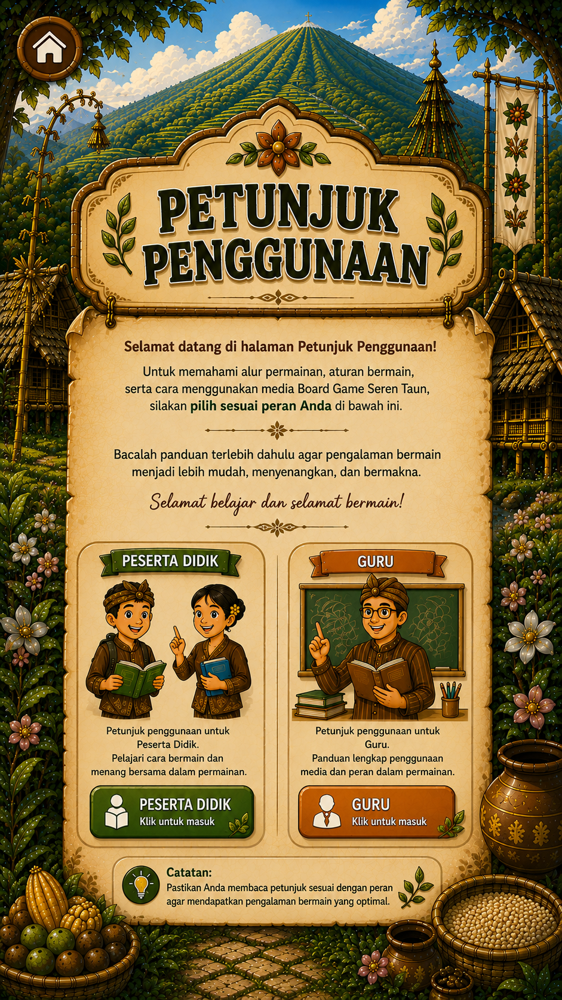